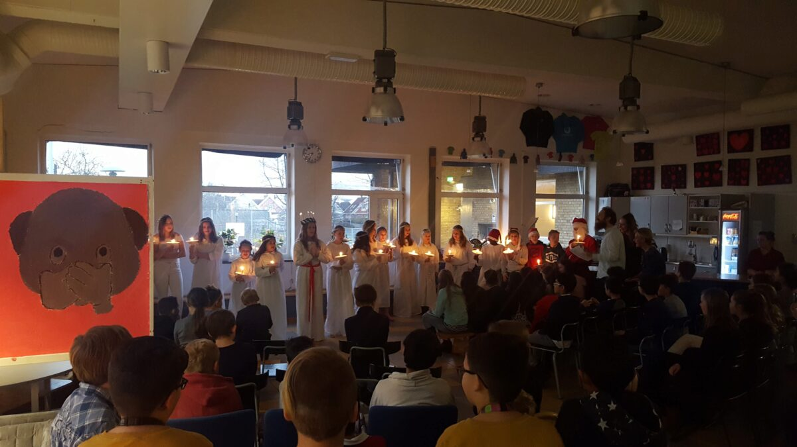

Det finns bilder på
Bastian och Ellinor också...
fast tydligen inte där Rudolf letade

Idag är det lucia!
Om vi letar bilder
från denna dag
hittar vi följande
Detta är från skolans luciatåg
när Bea var lucia
Det finns bilder på
Bastian och Ellinor också...
fast tydligen inte där Rudolf letade